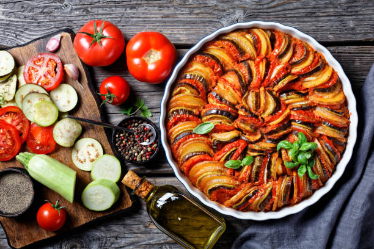

Explorar Paris
Com seus monumentos icônicos, cafés charmosos e ruas cheias de história, Paris encanta em cada detalhe.

Curiosidades de Paris
Paris é conhecida como a "Cidade Luz" não apenas por sua iluminação, mas porque foi uma das primeiras cidades a adotar postes elétricos. A Torre Eiffel, símbolo de Paris, era inicialmente considerada feia por muitos parisienses e quase foi demolida após a Exposição de 1889.
A cidade abriga mais de 130 museus, incluindo o famoso Louvre, onde está a Mona Lisa. E aqui vai uma curiosidade romântica: existe uma “Parede do Amor” em Montmartre com “Eu te amo” escrito em mais de 250 idiomas. Paris é também lar da primeira estação de metrô subterrânea da Europa continental, inaugurada em 1900.

Pontos Turísticos
- Torre Eiffel: Cartão-postal da cidade, com vista panorâmica do topo.
- Catedral de Notre-Dame: Famosa por sua arquitetura gótica e vitrais impressionantes.
- Arco do Triunfo: Monumento histórico no final da Champs-Élysées.
- Palácio de Versalhes: Antiga residência real com jardins exuberantes.
- Museu do Louvre: Um dos maiores do mundo, lar da Mona Lisa e outras obras-primas.
- Montmartre: Bairro boêmio com a Basílica de Sacré-Cœur e vistas incríveis da cidade.
- Sainte-Chapelle: Capela gótica famosa por seus vitrais coloridos.
- Ponte Alexandre III: Uma das pontes mais bonitas de Paris, rica em detalhes.
- Jardim de Luxemburgo: Parque clássico parisiense com esculturas e fontes.
- Moulin Rouge: Cabaré icônico que representa a vida noturna e artística da cidade.

Comidas Típicas
- Coq au Vin: Frango cozido lentamente em vinho tinto com cogumelos e bacon.
- Boeuf Bourguignon: Ensopado de carne bovina com vinho, ervas e vegetais.
- Ratatouille: Refogado de legumes típico do sul da França.
- Escargot: Caracóis preparados com manteiga de alho e ervas.
- Quiche Lorraine: Torta salgada recheada com bacon, ovos e queijo.
- Soupe à l’Oignon: Sopa de cebola gratinada com queijo e pão.
- Macarons: Doces leves e coloridos com recheios variados.
- Crêpe: Panqueca fina doce ou salgada, muito popular nas ruas.
- Tarte Tatin: Torta de maçã caramelizada assada de cabeça para baixo.
- Baguette com queijo brie: Clássico lanche francês simples e saboroso.